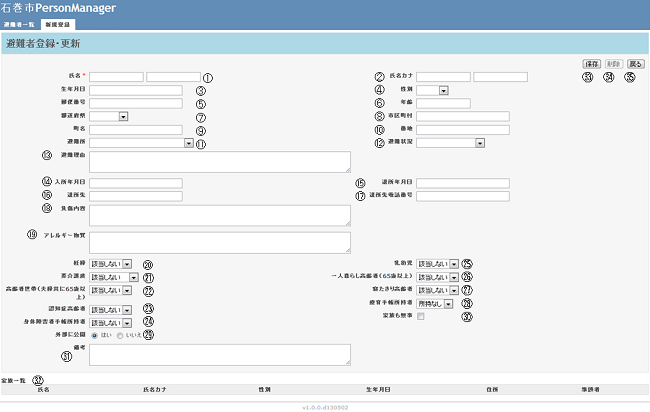

ログインして、「新規登録」タブメニューをクリックして、①～㉛までを入力します。
① 「氏名」を入力します。（漢字、ひらがな、カナ、英数字でも入力可能、最大500文字）
（入力必須項目）
② 「氏名カナ」を入力します。（入力例：サイガイ、タロウ）
③ 「生年月日」を入力します。（入力例：西暦入力：1965/3/16）
④ 「性別」を選択します。
⑤ 「郵便番号」を入力します。（入力例：1030051、103-0051どちらでも入力可能）
⑥ 「年齢」を入力します。
⑦ 「都道府県」：選択します。
⑧ 「市区町村」を入力します。
⑨ 「町名」を入力します。（石巻市のみ補助入力します）
⑩ 「番地」を入力します。
⑪ 「避難所」を選択します。（避難している、避難所を選択します。）
⑫ 「避難状況」を選択します。
⑬ 「避難理由」を入力します。
⑭ 「入所年月日」を入力します。避難所に避難した日時を入力します。
（入力例：西暦入力：2011/3/15）
⑮ 「退所年月日」を入力します。避難所から退所した日時を入力します。
（入力例：西暦入力：2011/3/15）
⑯ 「退所先」を入力します。（入力例：自宅、仮設住宅）
⑰ 「退所先電話番号」を入力します。（入力例：044-231-0501）
⑱ 「負傷内容」を入力します。けが、負傷の状況を入力します。
⑲ 「アレルギー物質」を入力します。（入力例：小麦粉、そばアレルギーなど）
⑳ ～㉘ 適用項目を選択いたします。
㉙「外部に公開」を選択します。「はい」：インターネット上に入力情報が公開されます。
㉚「家族も無事」にチェックすることにより、家族が無事であるかを確認します。
㉛「家族一覧」には、住基情報からの家族情報が表示されます。
㉝「保存」をクリックすることにより、入力した情報が保存されます。
㉞「削除」をクリックすることにより、入力した情報が削除されます。
㉟「戻る」をクリックすることにより、避難者一覧画面へ戻ります。
